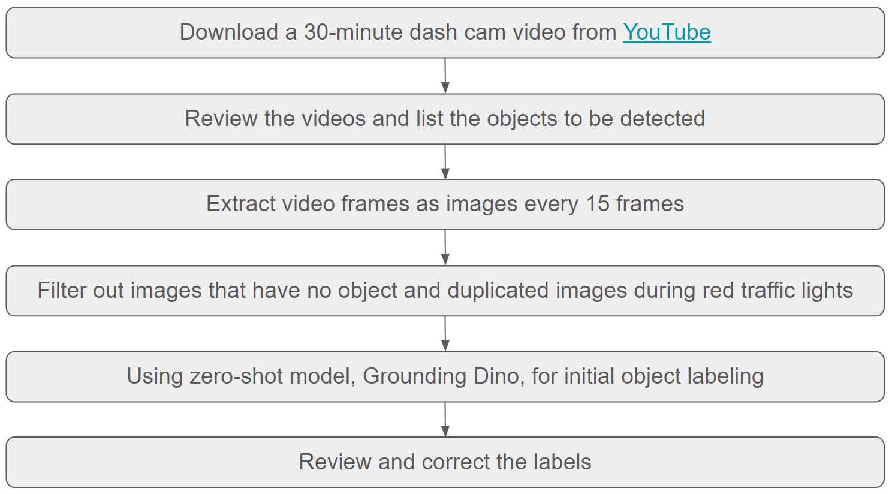
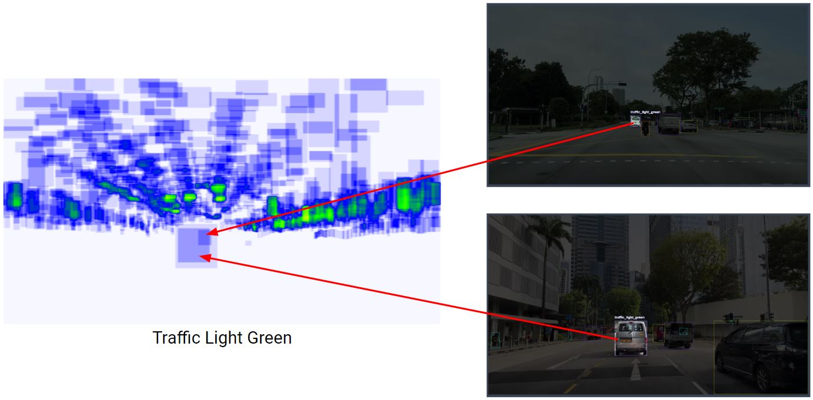
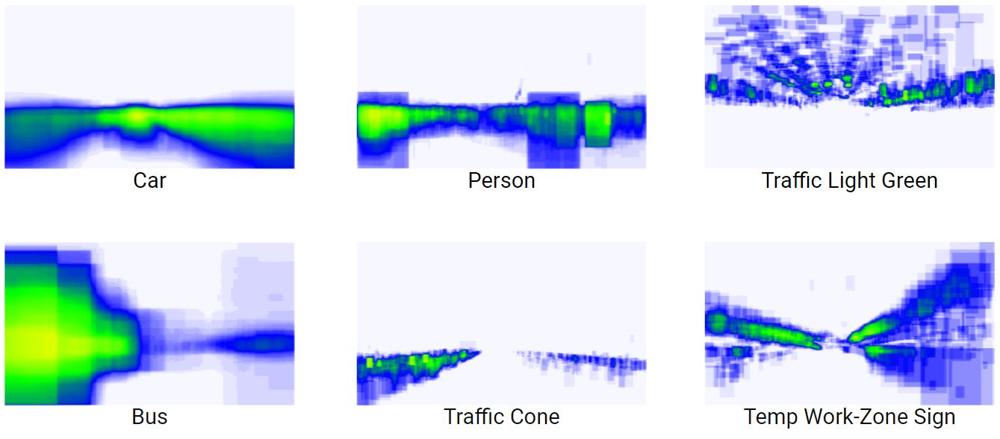
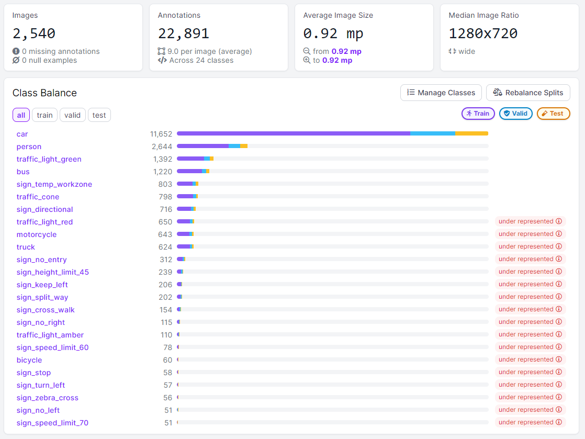
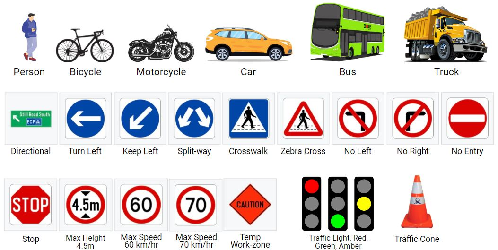
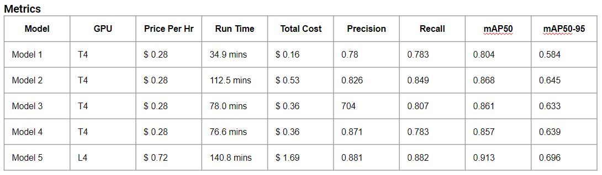

Singapore Traffic Object Detection
The video below shows the inference result from the trained model.
This project serves as my capstone for the General Assembly Data Science Immersive program, which spanned from February to May 2024. The objective of this project was to create a model capable of detecting Singapore's local vehicles, traffic lights, traffic signs, and other traffic-related objects using YOLOv8. For more details, please visit my GitHub page.
Methodology
1. Data collection

2. Data Cleaning
Some objects are mislabeled

Top 6 Class Heatmaps After Cleaning
3. Dataset
Dataset has 2,540 images, 22,891 labels and consists of 24 Class.


4. Modelling
Utilized YOLOv8 to train custom dataset. Below is the models comparison.
